ทะเลสาบไข่มังกร
ดูบนแผนที่และวิธีไป วางแผนฟาร์ม
ทุ่งในที่ราบสูง · Lv 88–98
ชั้นล่าง / ดันเจี้ยน
เดินต่อไป
มอนในแมพ (8)
| มอน | Lv | ในแมพ | ธาตุ | โซน |
|---|---|---|---|---|
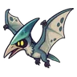 เทอโรซอร์ | 88–96 | ลม | ฝั่งรังมังกร | |
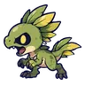 ไดโนจิ๋วจ่าฝูง | 90–98 | ดิน | ฝั่งรังมังกร | |
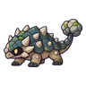 แองคิโลซอร์หางค้อน | 90–98 | ดิน | ฝั่งรังมังกร | |
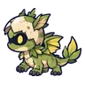 ลูกมังกรไพร | 88–96 | ดิน | ฝั่งรังมังกร | |
| 90–98 | น้ำ | ฝั่งรังมังกร | ||
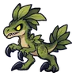 แร็พเตอร์ใบไม้ · ร่างขนนก | 90–98 | ดิน | ฝั่งรังมังกร | |
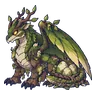 แม่มังกรไพร บอสประจำเขต | 98–98 | 1 | ดิน | |
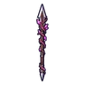 ทาลอน อัศวินมังกรรากดำ บอสผู้ถูกรากสิง | 99–99 | 1 | ดิน |
อุปกรณ์ที่ดรอปในแมพนี้
| ของ | โอกาสสูงสุด |
|---|---|
| ทวนยาวมังกรรากดำ | 0.5% |
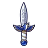 มีดคู่นกไนติงเกล | 0.25% |
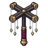 ไม้เชิดหุ่นช่างเอก | 0.25% |
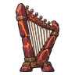 เครื่องดนตรีโกเลมหินแดง | 0.25% |
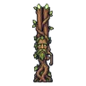 ลูกซองต้นไม้โบราณ | 0.25% |
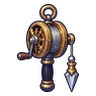 ด้ายเหล็กช่างเอก | 0.25% |
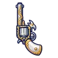 ปืนพกคู่ช่างเอก | 0.25% |
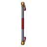 ไม้พลองเหล็กกล้าปรมาจารย์ | 0.25% |
| เกราะมังกรไพร | 0.15% |
| เกราะเต่าโบราณ | 0.15% |
| ชุดนกไฟอมตะ | 0.15% |
| ชุดพายุสายฟ้า | 0.15% |
| ชุดแมงมุมไหม | 0.15% |
| ชุดเงาหมอก | 0.15% |
| ชุดผู้รักษาเวลา | 0.15% |